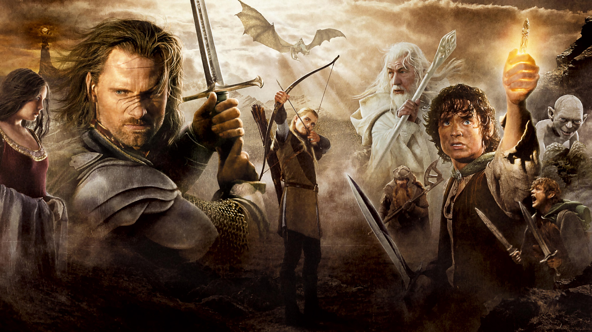

Властелин Колец Дж. Р. Р. Толкиен
Film/book biography
«Властели́н коле́ц» (англ. The Lord of the Rings) — роман-эпопея английского писателя Дж. Р. Р. Толкина, одно из самых известных произведений жанра фэнтези. «Властелин колец» был написан как единая книга, но из-за объёма при первом издании его разделили на три части — «Братство Кольца», «Две крепости» и «Возвращение короля». В виде трилогии он публикуется и по сей день, хотя часто в едином томе. Роман считается первым произведением жанра эпическое фэнтези, а также его классикой. «Властелин колец» — одна из самых известных и популярных книг XX века. Книга переведена по меньшей мере на 38 языков. Она оказала огромное влияние на литературу в жанре фэнтези, на настольные и компьютерные игры, на кинематограф и вообще на мировую культуру. Именно под влиянием работ профессора Толкина появилось ролевое движение. Большим успехом пользовалась и экранизация книги, созданная режиссёром Питером Джексоном.
Film list
- Властелин Колец : Братство Кольца(2002 г)
- Властелин Колец : Две крепости(2002 г)
- Властелин Колец : Возвращение короля(2003 г)
- Так же, существует вторая трилогия под названием "Хоббит"
- По хронологии первым следует "Хоббит"
Actors cast
Actor - Role
- Elijah Wood as Frodo Beggins
- Ian McKellen as Gendalf
- Viggo Mortensen as Aragorn
- Sean Astin as Samwise "Sam" Gamgee
- Billy Boyd as Peregrin "Pippin" Took
- Dominic Monaghan as Meriadoc "Merry" Brandybuck
- Christopher Lee as Saruman the White
- Liv Tyler as Arwen
- Orlando Bloom as Legolas
- John Rhys-Davies as Gimli
Rating
- Father
- Jack Toretto
- Wife
- Leticia "Letty" Ortiz-Toretto
- Cousins
- Fernando Toretto
- Tony Toretto
More Info